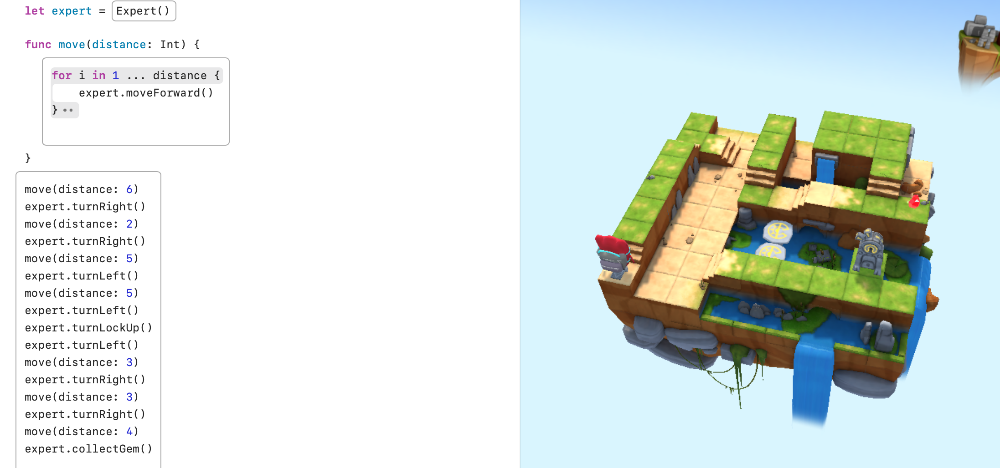
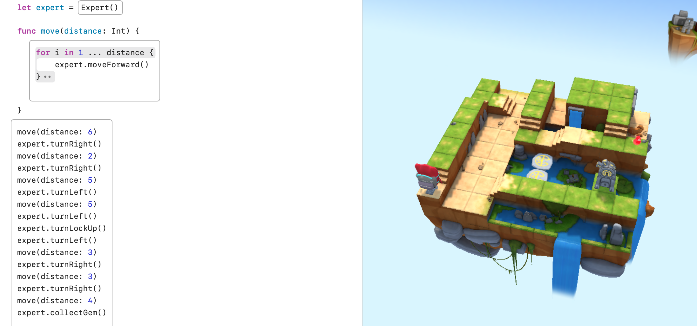

Unit1 Page
Welcome to the Unit1 page. Here you can see the work related to Unit1.
- These are the 9 concepts I have learned over Unit1.
- Commands: Instructions that tell the computer to perform specific actions.
- For loops: Control structures that repeat a block of code a set number of times.
- Conditional code: Statements that execute different code based on whether a condition is true or false.
- Logical operators: Symbols that combine or modify boolean values to evaluate expressions.
- Variables: Named storage locations in memory that hold data values.
- Types: Categories that define the kind of data a variable can hold, such as integers or strings.
- Initialization: The process of assigning an initial value to a variable when it is created.
- Functions: Reusable blocks of code designed to perform a specific task or computation.
- Parameters: Values or variables passed into functions to customize their behavior or output.
Pictures
 
